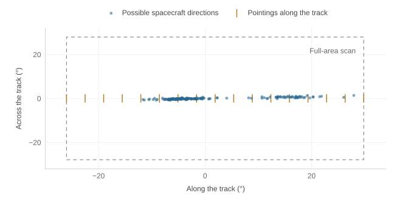
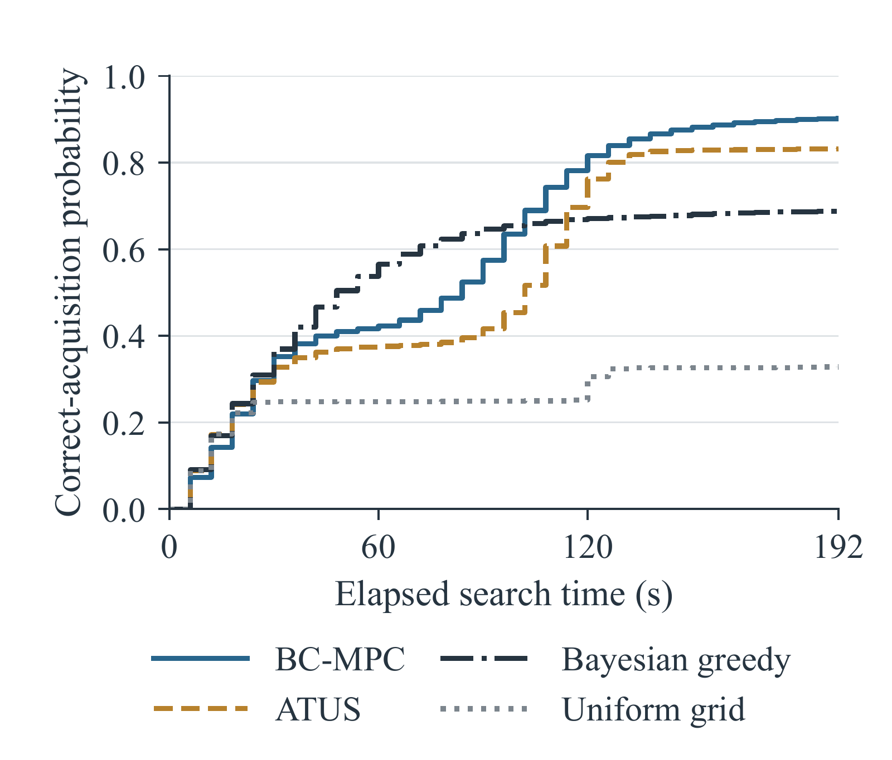
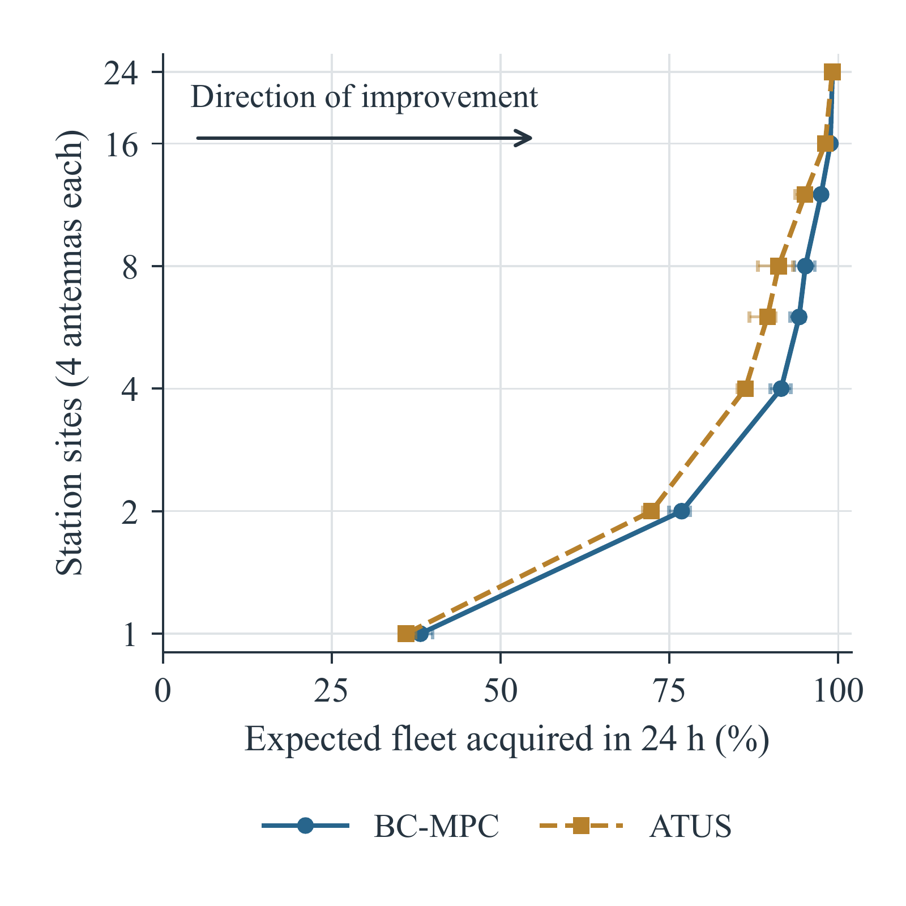

Bayesian Search MPC for Spacecraft Acquisition
Under Orbital Uncertainty
1 Stanford University2 Kayhan Space
2 Orbital uncertainty
An orbit estimate leaves many possible positions for one spacecraft.
Abstract
After launch, uncertainty in a spacecraft’s orbit can place its signal outside a ground station’s antenna beam. The station must search before it can receive telemetry or send commands. Our method, Bayesian Search Model Predictive Control (BS-MPC), uses missed detections to revise where the spacecraft is likely to be and choose where to point next. It accounts for how quickly the antenna can move and how much time remains to search. We test the method during individual contacts and across 100-spacecraft deployments. In the single-contact simulations, BS-MPC acquires 90.2% of assigned targets, compared with 83.3% for a tube sweep. Average search time falls from 89.8 to 78.3 seconds, counting unsuccessful attempts at the full 192-second duration.
The problem
An early orbit estimate tells a station when a spacecraft should pass overhead, but not exactly where to point. The possible directions can stretch far beyond a single antenna beam. The station has only a short contact to search this region, and moving the antenna, letting it settle, and listening for a signal all take time.

Bayesian search MPC
The controller tracks several possible orbits and how likely each one is. After a missed detection, it gives less weight to orbits where it expected to receive a signal. The next pointing depends on this revised estimate and on where the antenna can move, settle, and observe in the time available.
BS-MPC starts with a sweep along the predicted track that the antenna can carry out. It tries changes to the next four pointings while keeping the later schedule. A change is accepted only when the antenna can return to that schedule and the model predicts a better chance of finding the spacecraft before the contact ends. The controller repeats this process after each miss.
Results
Single-spacecraft acquisition
Each trial gives a ground station 192 seconds to acquire one spacecraft. We compare controllers on the same 2,773 reserved contacts across 96 simulated deployments. The simulated orbit errors follow the distribution assumed by the controller, and the antenna has limits on its speed and acceleration.

| Controller | Acquired by 60 s (%) | Acquired by 192 s (%) | Mean time (s) |
|---|---|---|---|
| Sky raster | 24.8 | 32.9 | 141.9 |
| Tube sweep | 37.6 | 83.3 | 89.8 |
| Prior-ranked sweep | 36.7 | 59.2 | 108.5 |
| Frozen-prior greedy | 39.4 | 50.8 | 118.5 |
| Bayesian greedy | 56.5 | 68.8 | 86.5 |
| MPC, no continuation | 61.4 | 79.0 | 74.5 |
| BS-MPC | 42.3 | 90.2 | 78.3 |
Probabilities are conditional on receiving a reserved contact. Mean time is restricted to 192 seconds, with unsuccessful attempts contributing the full duration. The antenna rate and acceleration limits are 1.10 deg/s and 1.00 deg/s².
Fleet acquisition
We simulate four deployments of 100 spacecraft and measure the fraction acquired within 24 hours. The network grows from one to 32 sites, with four independently steerable antennas at each site and up to five attempts per spacecraft.

With six sites, BS-MPC acquires an expected 93.2% of the fleet, compared with 88.1% for tube sweep. At 32 sites, the figures are 98.6% and 97.7%. Both controllers use the same contact allocation; bookings left unused after an acquisition are not reassigned.
These four deployments are separate from the single-spacecraft study. Sites are added in a fixed geographic order. The result is an expected acquired fraction, not the probability of acquiring every spacecraft.
Real-world validation
We plan to evaluate the searches using Kayhan Space LEOP records, with orbit uncertainty and receiver settings derived from mission data. Calibration and evaluation will use separate deployments.
Results pending. XX marks values awaiting validation.
| Deployments | Acquisition attempts | Ground stations |
|---|---|---|
| XX | XX | XX |
| Search policy | Acquisition probability (%) | Restricted mean acquisition time (s) |
|---|---|---|
| Recorded pointing | XX | XX |
| Tube sweep | XX | XX |
| Bayesian greedy | XX | XX |
| MPC, no continuation | XX | XX |
| BS-MPC | XX | XX |
Recorded acquisitions and model estimates for alternative pointings will be reported separately.
Explore the solver
LEOPT provides the search solvers and acquisition console under an MIT license. The browser demo includes BS-MPC and the six comparison methods from the paper. You can edit the sample mission, choose a controller, and step through the search.
The console opens in a separate window. It uses a circular orbit and a reduced search model; the paper’s experiments use SGP4 propagation.
Orbit propagation in the paper is powered by Brahe.
BibTeX
Research manuscript
@unpublished{schreiber2026bayesiansearch,
title = {Bayesian Search {MPC} for Spacecraft Acquisition
Under Orbital Uncertainty},
author = {Schreiber, Carlo and Eddy, Duncan and
Al-Husseini, Mahdi and Woods, Derek and
Feyzi, Araz and Kochenderfer, Mykel},
year = {2026},
note = {Research manuscript},
url = {https://satellite-acquisition.github.io/}
}